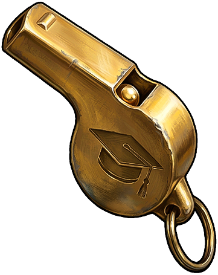

Прочее
Предметы · ПрочееСвисток физрука
Gym Teacher's Whistle

Gym Teacher's Whistle / ПрочееКак получить
Как получитьДобычаМожно получить в качестве добычи
Описание предмета
Очень редкая ивентовая валюта, которую можно обменять у торговца на локациях на скины